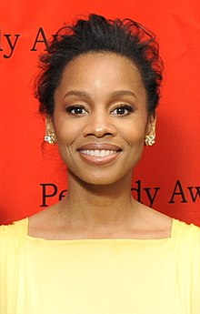

Anika Noni Rose
Anika Noni Rose | |
|---|---|
|  Rose at the 69th Annual Peabody Awards in 2010 | |
| Born | September 6, 1972 Bloomfield, Connecticut, U.S. |
| Education | Florida A&M University (BA) American Conservatory Theater (MFA) |
| Occupation | Actress, singer |
| Years active | 1998–present |
_(cropped).jpg){kind=link}
Anika Noni Rose (born September 6, 1972) is an American actress and singer. She is best known for voicing Tiana, Disney's first African-American movie protagonist, as seen in The Princess and the Frog (2009). She was named a Disney Legend in 2011.
She is also known for her starring role as Lorrell Robinson in the Academy Award-winning film Dreamgirls (2006) and for playing LaVerne "Jukebox" Ganner in the Starz hit series Power. She is also known for her performances in theatre, particularly for her starring roles as Emmie Thibodeaux in the Broadway production of Caroline, or Change (2004), for which she won the Tony Award for Best Featured Actress in a Musical, and Beneatha Younger in the Broadway revival of A Raisin in the Sun (2014), for which she was nominated for the Tony Award for Best Featured Actress in a Play.
Early life[edit]
Rose was born in Bloomfield, Connecticut to Claudia and John Rose, a corporate counsel.[1] She began her acting career in Bloomfield high school, appearing in a school production during her freshman year. She earned a Bachelor's Degree in theatre from Florida A&M University, then studied drama at the American Conservatory Theater in San Francisco, California.
Career[edit]
Early career[edit]
Rose moved to New York without a job. After three months, she played the role of Rusty in Broadway's Footloose. She followed Footloose with numerous workshops and two musicals using pre-existing song catalogs, Eli's Comin' Off-Broadway[2] and Me and Mrs. Jones with Lou Rawls in Philadelphia. Both of the full-scale tuners[N 1] were rumored for transfers, but neither made it anywhere after their limited engagements ended. Rose's big Broadway break was getting cast as Emmie Thibodeaux in Caroline, or Change. In 2004, she was awarded the Theatre World Award, the Lucille Lortel Award for Outstanding Featured Actress, and the Tony Award for Best Featured Actress in a Musical for Caroline, or Change. In 2010 she starred in Tyler Perry’s For Colored Girls with Phylicia Rashad and Janet Jackson. In 2014, Rose returned to Broadway in a revival of A Raisin in the Sun, receiving a nomination for the Tony Award for Best Featured Actress in a Play.[4]
After her film debut, King of the Bingo Game, she played the role of Kaya in From Justin to Kelly in 2003 and she performed in Temptation in 2004, followed by Surviving Christmas as a singer in the choir. In 2006, Rose starred in Dreamgirls as Lorrell Robinson with Beyoncé Knowles, Jennifer Hudson, Jamie Foxx, and Eddie Murphy. Rose appeared in the films Just Add Water and Razor.
Rose also starred alongside Jill Scott in The No. 1 Ladies Detective Agency directed by Anthony Minghella.[5]
The Princess and the Frog[edit]
Anika Noni Rose is best known for her role in Disney's 2009 animated feature The Princess and the Frog, as the voice of the lead character Tiana; the character is Disney's first African-American princess. Rose also said at the time, “Not only is [Tiana] the first black princess, she’s the first American princess. So, the scope and the significance is larger than people even realize.”[6] Rose added that she hoped her role in the film would help affirm young brown-skinned children by seeing someone who looks like them in a Disney film. The film being released in 2009, the same year that Barack Obama and Michelle Obama entered the White House was completely coincidental, according to the creators. But several commentators noted how the coincidence reinforced the positive portrayal of African-Americans.[7][8]
Rose hosted a hometown screening of The Princess and the Frog for children from the Charter Oak Cultural Center, a non-profit multi-cultural arts center that provides free after-school programs in Hartford, Connecticut.[9] Rose's performance in the film garnered one nomination for an NAACP Image Award and three nominations for the Black Reel Awards. She won the Black Reel Award for Best Outstanding Voice Performance.
Rose was named a Disney Legend on August 19, 2011.[10] Rose said of the honor, "I always dreamed of being a voice in a Disney movie, but even in those dreams, I never once dreamed of being a princess... I feel like what an honor that this is and how the dream comes true, bigger and stronger than I had even imagined it."[11]
Upcoming Princess and the Frog ride[edit]
In June 2020, Disney announced that they would be reworking their flume ride Splash Mountain with characters from The Princess and the Frog. Anika Noni Rose said, "It's thrilling. People are amped and ready. I think it's awesome, particularly now, to be reinvigorating her story." Disney said the ride will take place immediately after the end of the film, and it will feature a Mardi Gras party. Rose also added that she would love for Disney to create a Tiana's Palace Restaurant at the theme parks. "I've been looking forward to a Tiana's Palace for years... I have dreams of them partnering with Café du Monde [a New Orleans based restaurant] on some real deal beignets, having some fantastic shrimp and grits and king cake during Mardi Gras season. And the occasional second line through the joint. Basically all the things I love!"[12][13][14]
2010s[edit]
In 2010, she played the role of Yasmine in the movie For Colored Girls. One critic described Rose's performance as "especially fierce".[15] From 2010 to 2013, Rose had a guest-starring role in the legal TV drama The Good Wife. She played the role of Sara Tidwell in the A&E miniseries Bag of Bones in 2011, based on the Stephen King novel of the same name.[16]
In 2012, she guest-starred in "Gone Abie Gone", episode 3, season 24 of The Simpsons, voicing Abe Simpson's second wife, Rita LaFleur. The episode originally aired November 11 of that year.
Rose played the adult "Kizzy" in two episodes of television's Roots, an adaptation of the novel by Alex Haley and remake of the 1977 miniseries. Critic Alan Sepinwall, in suggesting Emmy nominees to the Academy of Television Arts & Sciences, called her "one of the best parts of the outstanding Roots ensemble."[17] She has a role in the Starz series Power[18] and the leading role in the 2017 BET drama The Quad.
Bedtime Stories for the Littles[edit]
During the COVID-19 pandemic lockdown of 2020, Rose created a weekly series, where she read bedtime stories to small children in order to help ease their fear during the lockdown. Rose said, "I love reading to kids, and I wanted to give our little people something soft and soothing in this very jarring moment in time. I thought a bedtime story would be the perfect way. I can give my voice to the ones who know it best, without anyone leaving home."[19] She also said that she wanted to help children act silly, use their imaginations, and find a love of books that Rose said she had as a child.[20][21] As one of the stories in the series, Rose chose the Princess and the Frog book "Tiana's Growing Experiment."[22]
2020s[edit]
In 2020, Anika Noni Rose starred in the Netflix musical Jingle Jangle: A Christmas Journey playing Jessica Jangle.[23] Noni Rose applauded the film's portrayal of black and brown professionals in an English Victorian setting.[24]
In 2021, she played an affluent but unhappy lawyer who employs a young mother fleeing an abusive relationship in the Netflix limited series Maid.
Filmography[edit]
Film[edit]
| Year | Title | Role | Notes |
|---|---|---|---|
| 1999 | King of the Bingo Game | Film Noir Female | Short |
| 2003 | From Justin to Kelly | Kaya | |
| 2004 | Temptation | Fog | |
| Surviving Christmas | Choir | ||
| 2006 | Dreamgirls | Lorrell Maya Robinson | |
| 2008 | Just Add Water | R'ch'lle | |
| 2009 | The Princess and the Frog | Tiana (voice) | |
| 2010 | For Colored Girls | Yasmine | |
| 2011 | Company | Marta | |
| 2012 | Skyler | Therapist | |
| 2013 | As Cool as I Am | Frances | |
| Khumba | Lungisa (voice) | ||
| Half of a Yellow Sun | Kainene | ||
| 2014 | Imperial Dreams | Miss Price | |
| 2016 | Throne of Elves | Meyla (voice) | |
| Grace for President | Narrator | Video short | |
| 2017 | Vixen | Kuasa (voice) | Video |
| Everything, Everything | Dr. Pauline Whittier | ||
| 2018 | Assassination Nation | Nance | |
| Ralph Breaks the Internet | Tiana (voice) | ||
| 2020 | Body Cam | Taneesha Branz | |
| Jingle Jangle: A Christmas Journey | Jessica Jangle | [25] | |
| 2021 | The Killing of Kenneth Chamberlain | Candace Wade | |
| Injustice | Selina Kyle / Catwoman (voice) | ||
| The Outlaw Johnny Black | Jessie Lee |
Television[edit]
| Year | Title | Role | Notes |
|---|---|---|---|
| 2001 | 100 Centre Street | Woman | Episode: "Domestic Abuses" |
| 2002 | Third Watch | Monay | Episode: "Thicker Than Water" |
| 2003 | Hack | Episode: "Hidden Agenda" | |
| 2007 | The Starter Wife | Lavender | Main cast |
| 2008–09 | The No. 1 Ladies' Detective Agency | Grace Makutsi | Main cast |
| 2010–13 | The Good Wife | Wendy Scott-Carr | Recurring cast (season 2-3), guest (season 4) |
| 2011 | LA Phil Live | Juliet | Episode: "Dudamel Conducts Tchaikovsky" |
| Law & Order: Special Victims Unit | Miriam Deng | Episode: "Scorched Earth" | |
| Have a Little Faith | Annette | TV movie | |
| Bag of Bones | Sara Tidwell | Episode: "Part 1 & 2" | |
| 2012 | Private Practice | Corinne Bennett | Recurring cast (season 5) |
| Elementary | Dr. Carrie Dwyer | Episode: "Lesser Evils" | |
| The Simpsons | Rita LaFleur (voice) | Episode: "Gone Abie Gone" | |
| 2013 | The Watsons Go to Birmingham | Wilona Sands Watson | TV movie |
| 2014 | A Day Late and a Dollar Short | Paris Price | TV movie |
| Sofia the First | Princess Tiana (voice) | Episode: "Winter's Gift" | |
| 2015 | For Justice | Natalia Chapin | TV movie |
| 2015–16 | Bates Motel | Liz Babbitt | Recurring cast (season 3-4) |
| 2016 | Roots | Kizzy Waller | Episode: "Part 3 & 4" |
| 2016–17 | Power | Laverne "Jukebox" Ganner | Recurring cast (season 3-4) |
| 2017–18 | The Quad | Dr. Eva Fletcher | Main cast |
| 2018 | American Masters | Lorraine Hansberry (voice) | Episode: "Lorraine Hansberry: Sighted Eyes/Feeling Heart" |
| 2018–19 | Disney Comics in Motion | Tiana (voice) | Episode: "Tiana "Beignet Stand"" & "Tiana "Gumbo Cook-Off"" |
| 2019 | Avengers Assemble | Yemandi (voice) | Episode: "Yemandi" |
| Beast Mode | Marsha Blackstone | TV movie | |
| 2020 | Magical Girl Friendship Squad: Origins | Nut (voice) | Main cast |
| Little Fires Everywhere | Pauline Hawthorne | Episode: "The Spark" & "The Uncanny" | |
| 2021 | Family Reunion | Miss Karen | Episode: "Remember Mazzi's First Love?" |
| Them | Ella Mae Johnson | Recurring cast | |
| Maid | Regina | Main cast | |
| Amphibia | Dr. Jan (voice) | Recurring cast (season 3) |
Web[edit]
| Year | Title | Role | Notes |
|---|---|---|---|
| 2015–2016 | Vixen | Kuasa (voice) | Main role |
| 2017 | Voltron: Legendary Defender | Acxa (voice) | 2 episodes; role recast with Erica Luttrell. |
Video games[edit]
| Year | Title | Voice role |
|---|---|---|
| 2011 | Kinect Disneyland Adventures | Princess Tiana |
| 2012 | Disney Princess: My Fairytale Adventure |
Stage[edit]
| Year | Title | Role | Venue | Notes |
|---|---|---|---|---|
| 1998 | Insurrection: Holding History | Katie Lynn | American Conservatory Theater | |
| Valley Song | Veronica Jonkers | Berkeley Repertory Theater | ||
| Hydriotaphia, or the Death of Dr. Browne | His Soul | Berkeley Repertory Theater | ||
| 1999 | Tartuffe | Marianne | American Conservatory Theater | |
| Threepenny Opera | Polly Peachum | American Conservatory Theater | ||
| 2000 | Footloose | Rusty | Richard Rodgers Theatre | |
| 2001 | Carmen Jones | Cindy Lou | York Theatre | |
| Eli's Comin' | The Woman | Vineyard Theatre | ||
| Me and Mrs. Jones | Cookie | Prince Music Theater | ||
| 2003 | Caroline, or Change | Emmie Thibodeaux | The Public Theatre | |
| 2004 | Eugene O'Neill Theatre | |||
| Ahmanson Theatre | ||||
| 2008 | Cat on a Hot Tin Roof | Maggie "The Cat" | Broadhurst Theater | |
| 2011 | Company | Marta | Avery Fisher Hall | New York Philharmonic concert |
| 2013 | Hamilton | Angelica Schuyler | Vassar College | Workshop |
| 2014 | A Raisin in the Sun | Beneatha Younger | Ethel Barrymore Theatre | |
| 2018 | Carmen Jones | Carmen Jones | Classic Stage Company |
Awards and nominations[edit]
Notes[edit]
References[edit]
- ^ "Rose, Anika Noni", Encyclopedia.com.
- ^ Gutman, Les."ACurtainUpReview:Eli's Comin'" Curtain Up.com, based on 5/2/01 performance, accessed September 1, 2011
- ^ Variety slanguage dictionary, glossary "t".
- ^ 2014 Tony Award Nominations - The Complete List; A GENTLEMAN'S GUIDE Leads With 10! broadwayworld.com, Retrieved May 5, 2014
- ^ Kimberly Nordyke (June 25, 2007). "Rose lands 'Agency' role". The Hollywood Reporter. Archived from the original on June 30, 2007. Retrieved June 29, 2007.
- ^ "Meet Anika Noni Rose: Disney's First Animated Black Princess".
- ^ "Disney Debuts African-American Princess Heroine".
- ^ "NPR: Talking Race in Disney's Princess & The Frog".
- ^ Rodman, Sarah (December 6, 2009). "Wearing the crown". The Boston Globe.
- ^ "Photo Flash: Lea Salonga, Anika Noni Rose, Paige O'Hara et al. Honored at D23 Expo" BroadwayWorld.com, August 20, 2011
- ^ "D23: Anika Noni Rose".
- ^ "What to Expect From Disney's New Princess and the Frog Ride, According to Star Anika Noni Rose".
- ^ "'The Princess And The Frog' Is Coming To Disney's Splash Mountain".
- ^ "What The Princess And The Frog Voice Actress Wants To See In Splash Mountain Redesign At Disneyland".
- ^ Schwarzbaum, Lisa (November 3, 2010). "For Colored Girls". Entertainment Weekly. Retrieved December 26, 2010.
- ^ Levine, Stuart (August 3, 2011). "Rose lands role in 'Bag of Bones'". Variety. Retrieved August 8, 2011.
- ^ Alan Sepinwall, "These shows would make great Emmy nominees", June 14, 2016.
- ^ "Anika Noni Rose: "Half of a Yellow Sun" actress joins TV series "Power"". Pulse Nigeria. Chidumga Izuzu. Retrieved December 9, 2015.
- ^ "Once Upon a Time: Tony Winner Anika Noni Rose Launches Bedtime Stories for the Littles!".
- ^ "Anika Noni Rose Wants to Help Children Find Their Love of Books Like She Had as a Child".
- ^ "Anika Noni Rose On Why She Decided to Start Her Weekly Bedtime Stories For the Littles!".
- ^ "Tiana's Growing Experiment, Storytime with Anika Noni Rose". Archived from the original on December 19, 2021.
- ^ "How Jingle Jangle Forged a Showstopper with Musical Number 'Make It Work Again'".
- ^ "Jingle Jangle's Anika Noni Rose and Madalen Mills Explain their Deep Connection to the New Inspirational Christmas Film".
- ^ Netflix ‘Jingle Jangle’ Musical Adds Keegan-Michael Key, Phylicia Rashad, Anika Noni Rose & Madalen Mills
- ^ "NAACP Image Awards Winner Include 'The Help,' Stars Octavia Spencer, Viola Davis". The Hollywood Reporter. February 17, 2012. Retrieved February 17, 2012.
External links[edit]
| Wikimedia Commons has media related to Anika Noni Rose. |
- 1972 births
- African-American actresses
- American sopranos
- American Conservatory Theater alumni
- Florida A&M University alumni
- Living people
- Obie Award recipients
- People from Bloomfield, Connecticut
- Tony Award winners
- 20th-century American actresses
- 21st-century American actresses
- American musical theatre actresses
- American voice actresses
- Audiobook narrators
- Theatre World Award winners
- 20th-century African-American women singers
- 21st-century African-American women singers